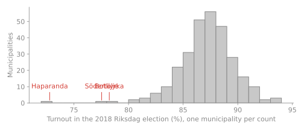
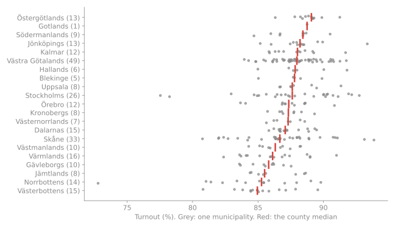
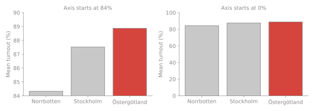
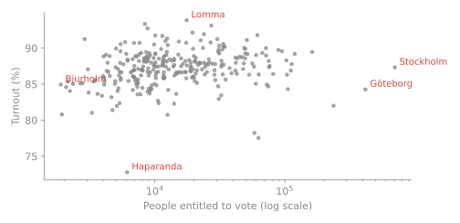

MT4008 · Week 2: reading data, the five verbs, group summaries and plots that tell the truth
Monday 9 November 2026
Example all week: turnout in the 2018 Riksdag election, 290 municipalities. HW2 uses other data.

Most municipalities voted between 84% and 91%. Three are far below. A table of 290 rows would never show you that.
| You see | It means | Tell the function |
|---|---|---|
; |
semicolon separator | sep=";" · read_csv2() |
23,11 |
decimal comma | decimal="," · read_csv2() |
Ä, Ö |
encoding matters | encoding="utf-8-sig" |
sep=“;”, turnout is read as text.
voters / electorate should match the turnout column.Tidy: one row per observation, one column per variable, one value per cell.
| municipality | county | turnout |
|---|---|---|
| Haparanda | Norrbotten | 72.8 |
| Lomma | Skåne | 93.9 |
Not tidy: a variable hidden in the column names.
| municipality | 2014 | 2018 |
|---|---|---|
| Haparanda | … | 72.8 |
| Lomma | … | 93.9 |
Tools expect tidy tables. Reshaping between the two is week 3.
| Verb | pandas | dplyr |
|---|---|---|
| select columns | df[["a", "b"]] |
select(a, b) |
| filter rows | df.query("a > 1") |
filter(a > 1) |
| mutate: a new column | df.assign(c=...) |
mutate(c = ...) |
| arrange: sort | df.sort_values("a") |
arrange(a) |
| group and summarise | df.groupby("g").agg(...) |
group_by(g) \|> summarise(...) |
Almost everything you do to a table combines these five. One step per line, so a reviewer can comment on each.
| County | n | mean | median | sd |
|---|---|---|---|---|
| Norrbotten | 14 | 84.3 | 85.3 | 4.3 |
| Västerbotten | 15 | 85.2 | 85.0 | 2.1 |
| … | ||||
| Gotland | 1 | 88.8 | 88.8 | – |
| Östergötland | 13 | 88.9 | 89.1 | 1.1 |
The election: all 290 municipalities.
The table is the 2018 result. There is no sampling uncertainty to report.
HW2: 158 apartment sales.
Some of the sales that could have happened. Each group mean gets its interval:
\[\bar x \pm 1.96\,\frac{s}{\sqrt n}\]
More: Statistics, section 4


Left: Östergötland’s bar looks fifteen times as long. Its turnout is 4.5 points higher, about 5% more.

From 1 886 to 704 157 people entitled to vote: each step on the axis is ten times the last. Say so on the axis. No strong pattern: size alone says little about turnout.
| Less helpful | More helpful |
|---|---|
| “The plot is confusing.” | “The y-axis starts at 50 000, so the 1-room bar looks twice the 3-room bar. Start at zero, or use dots.” |
| “Good job!” | “The table with n and an interval per group made the conclusion easy to check.” |
| “Wrong numbers.” | “Line 42 drops every row with any missing value, so all 158 sales are gone. Drop only rows missing livingArea.” |
Comment on a line in Files changed; use suggestion blocks for small fixes.
How does the price per m² depend on the number of rooms, in Ekhagen?
Due Mon 16 Nov, 23:59 · peer review by Thu 19 Nov, 23:59.
HW2 · Week 2 · Statistics
Questions? Then: work time.